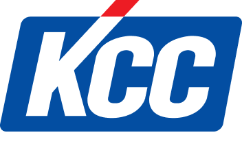

KCC Corporation
KCC(케이씨씨)는 도료(페인트)·건축자재·실리콘을 주력으로 하는 대한민국의 종합 화학·소재 기업이다.
최종 업데이트

KCC Corporation는 어떤 브랜드인가
KCC는 도료, 건자재, 실리콘을 아우르는 한국의 종합 건자재·화학·실리콘 기업이다. 창업주 정상영이 1958년 서울 영등포에 세운 금강스레트공업이 모태로, 1976년 금강, 2001년 금강고려화학을 거쳐 2005년 KCC로 사명을 확정했다.
두 차례의 전환점이 회사를 다시 정의했다. 1974년 고려화학 설립으로 유기화학·도료에 진입했고, 2019년 미국 모멘티브를 약 3조5천억원 규모 컨소시엄으로 100% 인수하며 글로벌 실리콘 기업으로 도약했다.
연결 매출은 6조원대로, 국내 페인트 시장 1위이자 세계 실리콘 상위권 사업자다.
KCC Corporation는 어떻게 봐야 할까
KCC를 이해하는 핵심은 도료·건자재 중심의 내수 제조사가 실리콘 소재 글로벌 기업으로 무게중심을 옮긴 구조 변화에 있다. 모멘티브 인수로 그룹 실리콘 생산능력은 7만5천톤에서 50만톤 이상으로 확대됐고, 인수 이듬해부터 실리콘이 전체 매출의 절반을 넘기며 회사의 외형 자체가 바뀌었다.
모멘티브는 미국 다우, 독일 바커와 함께 세계 3대 실리콘 기업으로 꼽혀 약 15% 점유율을 보유한다. 다만 6년간 약 3조원을 투입한 실리콘은 2023년 833억원 적자 뒤 2024년 729억원 흑자로 돌아서며 수익성 회복이 진행형이다.
그 사이 도료·건자재가 두 자릿수 영업이익률로 그룹 실적을 떠받쳤다. 한국 독자에게 KCC는 페인트·창호 같은 익숙한 건축 브랜드가 전기차·반도체용 첨단 소재로 사업의 다음 50년을 다시 짜는 전환 사례로 읽을 만하다.
KCC Corporation는 어떻게 시작되고 성장했나
전후 복구와 산업화 초입이던 1958년 8월, 정상영은 서울 영등포구 양평동에 금강스레트공업을 세웠다. 형 정주영의 현대그룹과는 별개로, 슬레이트 등 건축자재로 출발해 주택·건설 수요가 폭발하던 시대에 자리를 잡았다.
1962년 지방영업소를 열고 1963년 건설업 면허를 따 1965년 건설사업부를 신설하며 건자재에서 건설로 영역을 넓혔다. 1973년 증권거래소 상장, 1976년 금강으로 사명을 바꿨다.
첫 번째 결정적 전환은 1974년 울산에 고려화학을 세워 유기화학·도료로 진입한 것으로, 이후 자동차·선박용 도료까지 다각화해 국내 페인트 1위 기반을 만들었다. 2001년 금강과 고려화학을 합쳐 금강고려화학, 2005년 KCC로 정리했다.
두 번째 전환은 2019년 모멘티브 인수로, 건자재·도료 회사를 글로벌 실리콘 사업자로 재정의했다. 2021년에는 유리·인테리어 사업을 KCC글라스로 분사하며 사업을 재편했다.
KCC Corporation의 브랜드 아이덴티티는 무엇인가
KCC의 경영이념은 '더 좋은 삶을 위한 가치창조'로, 건축에서 첨단 화학소재까지 생활과 산업의 바탕이 되는 소재 공급을 지향한다. 비주얼 아이덴티티는 바깥으로 돌출된 빨간색 'K'와 부드러운 'CC'의 결합이다.
강렬한 'K'는 기업 비전과 발전성을 극대화하는 임팩트 마크로, 둥근 'CC'는 고객 만족과 서비스 정신을 표현해 도전적 성장과 친근함을 함께 담는다. 전용 색상과 워드마크, 로고타입은 시각 체계의 핵심 요소다.
타깃은 건설사·자동차·선박·전자 등 산업 고객과 인테리어·창호를 찾는 일반 소비자로 이원화된다. 보이스는 신뢰·품질·기술 리더십을 강조하는 무게감 있는 톤이며, 글로벌 소재기업과 인권·윤리경영을 함께 내세운다.
KCC Corporation의 대표 제품과 서비스는 무엇인가
취급 품목은 건축·산업용 도료(페인트)와 자동차·선박용 도료, 단열재·내외장재 등 건자재, 그리고 모멘티브 기반의 산업·전자·반도체용 실리콘 소재를 아우른다. 채널은 건설사·완성차·조선·전자 업체를 상대하는 B2B 영업망이 중심이고, 소비자 대상 인테리어·창호·바닥재 유통은 2021년 분사한 KCC글라스의 홈씨씨 인테리어 매장으로 운영된다.
KCC Corporation는 지금 어떤 상태인가
본사는 서울에 두며, 정상영 창업주 별세 후 장남 정몽진 회장이 대표이사로 그룹을 이끈다. 정몽진 약 19.58% 지분으로 최대주주이며 정몽익·정몽열 등 형제가 계열을 나눠 경영하는 오너가 지배구조다.
국가는 대한민국. 연결 매출은 2024년 약 6조6천억원, 영업이익 약 4천7백억원 규모이며 실리콘이 매출의 절반 안팎을 차지한다.
KCC Corporation 로고는 어떻게 변해왔나
자주 묻는 질문
KCC Corporation는 어느 나라 브랜드인가요?
KCC Corporation는 한국의 브랜드·비즈니스 브랜드입니다.
KCC Corporation의 브랜드 아이덴티티는 무엇인가요?
KCC의 경영이념은 '더 좋은 삶을 위한 가치창조'로, 건축에서 첨단 화학소재까지 생활과 산업의 바탕이 되는 소재 공급을 지향한다.
KCC Corporation의 대표 제품은 무엇인가요?
취급 품목은 건축·산업용 도료(페인트)와 자동차·선박용 도료, 단열재·내외장재 등 건자재, 그리고 모멘티브 기반의 산업·전자·반도체용 실리콘 소재를 아우른다.
KCC Corporation의 본사는 어디에 있나요?
본사는 서울에 두며, 정상영 창업주 별세 후 장남 정몽진 회장이 대표이사로 그룹을 이끈다.
KCC Corporation의 공식 웹사이트는 어디인가요?
KCC Corporation의 공식 웹사이트는 https://www.kccworld.co.kr/ 입니다.
출처와 검증
KCC Corporation 관련 참고: 공식 웹사이트. 브랜드명은 한글과 원어를 함께 표기하되 데이터에 없는 표기는 만들지 않습니다. 기원 국가·설립연도는 검수된 정의문에서 확인된 값을 우선하고, 없을 때만 공식 웹사이트 URL이 일치하는 위키데이터 개체의 값을 씁니다.